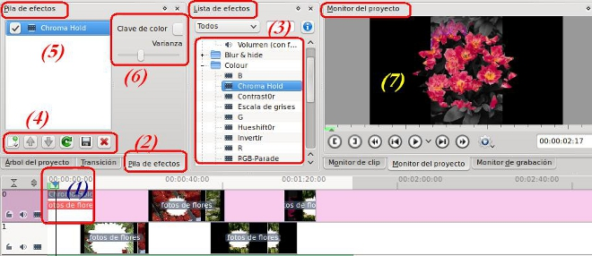

Edición de Audio y video
1. Efectos en Kdenlive
La finalidad básica de los efectos, tanto de audio como video, es modificar algunos aspectos del clip original. Entre estos aspectos podemos mencionar :
-
Audio: cambiar el tono, ecualizar, aumentar el volumen, poner eco en nuestros clips, vinilo, reverberación, entre otros.
-
Video: borroso, brillo, carboncillo (charcoal), gama de colores, escala de grises, invertir (negativo), espejo, pixelar, velocidad de reproducción, congelar imagen, entre otros.

En la imagen podemos observar los principales apartados de nuestro editor para el uso de efectos.
Jo.R.C.A. 2004 - 2011

Edición de Audio y Video con Software Libre by José Ramón Cerdeira Alonso is licensed under a Creative Commons Reconocimiento-No comercial-Compartir bajo la misma licencia 3.0 España License